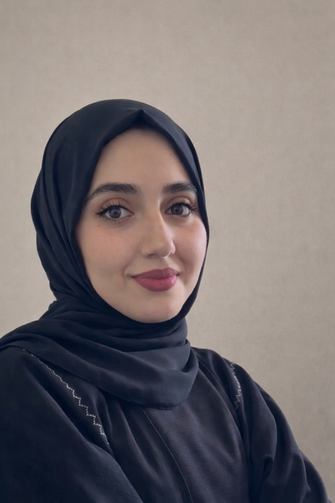

هوامش لم تذكر
كتاب نصوص يقترب من التجربة الإنسانية وما يبقى خارج المتن من تفاصيل وأسئلة ومشاعر، بلغة تأملية قريبة من القارئ.
ISBN 978-2-227-76668-6
متاح عبر الناشر، ومفهرس لدى مكتبة محمد بن راشد في دبي وبيت الحكمة في الشارقة.
كاتبة وروائية عراقية مقيمة في دولة الإمارات العربية المتحدة، تهتم في أعمالها بالقضايا الإنسانية والاجتماعية، والعلاقات الأسرية، والتربية، وأثر الاحتواء النفسي في حياة الإنسان.
المؤلفات
آمنة ماجد الشبيبي كاتبة وروائية عراقية مقيمة في دولة الإمارات العربية المتحدة. صدر لها كتاب «هوامش لم تذكر» عام 2024، ثم رواية «آباء يحسبون أنهم يحسنون صنعا» عام 2026 عن دار رمستنا للنشر والتوزيع. شاركت أعمالها في عدد من معارض الكتب والفعاليات الأدبية داخل دولة الإمارات وخارجها، وظهرت في لقاءات تلفزيونية للحديث عن تجربتها ومؤلفاتها. وهي عضو في جمعية حماية اللغة العربية وجمعية الفجيرة الثقافية.
كتاب نصوص يقترب من التجربة الإنسانية وما يبقى خارج المتن من تفاصيل وأسئلة ومشاعر، بلغة تأملية قريبة من القارئ.
متاح عبر الناشر، ومفهرس لدى مكتبة محمد بن راشد في دبي وبيت الحكمة في الشارقة.
رواية اجتماعية تتناول أثر التربية والإصغاء النفسي داخل الأسرة، وتسأل عما يحدث حين تتوافر الاحتياجات المادية بينما تغيب الطمأنينة واللغة العاطفية بين الآباء والأبناء.
موزعة عبر عدد من منصات الكتب، ومفهرسة لدى بيت الحكمة في الشارقة.
ظهور في لقاءات تلفزيونية عبر تلفزيون الفجيرة للحديث عن المؤلفات والتجربة الأدبية.
عضو في جمعية حماية اللغة العربية وجمعية الفجيرة الثقافية، ولها ملف إلكتروني باسمها لدى الاتحاد الدولي للغة العربية.
تخصص هذه المساحة لنشر المقالات والنصوص الأدبية للكاتبة آمنة ماجد الشبيبي. يضاف كل مقال جديد بعنوانه وتاريخ نشره ونصه أو رابطه المستقل، لتكون للموقع أرشيفه الأدبي المتجدد.
يمكن متابعة كتاباتي وأخباري الأدبية عبر حساباتي ومنصاتي الرسمية:
للتواصل الأدبي، المشاركات الثقافية، اللقاءات والطلبات المهنية:
amnashamkhi@yahoo.comالبريد الرسمي المعتمد للتواصل مع الكاتبة عبر هذا الموقع.